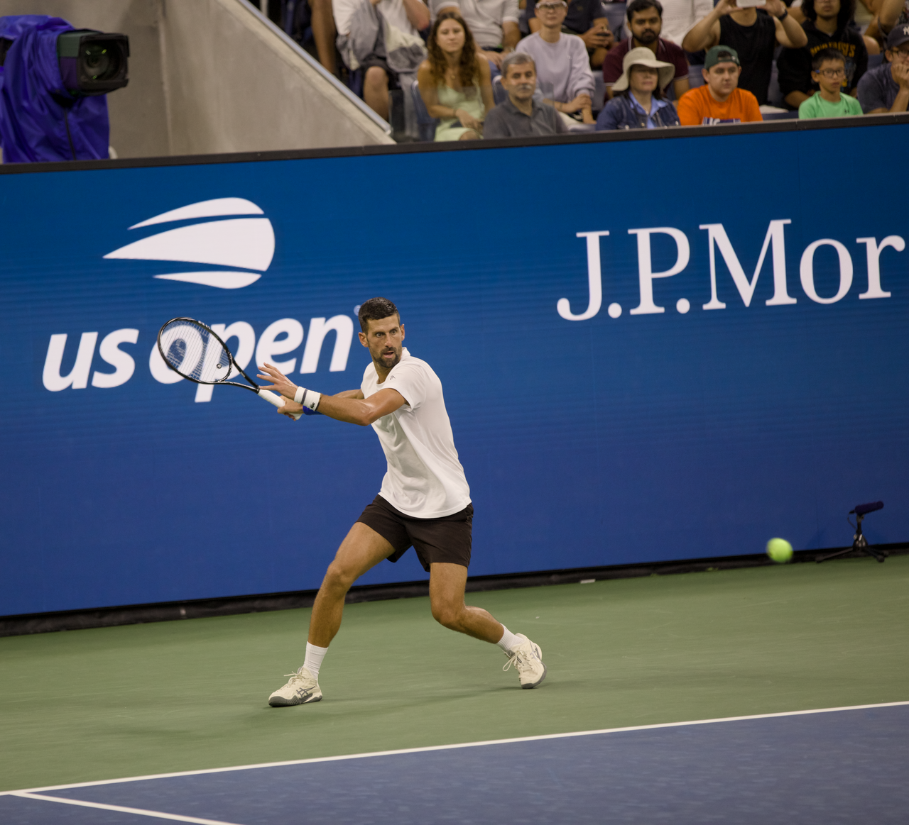

O US Open 2026 ainda está em sua primeira rodada, mas o cenário das chaves de simples masculina e feminina já mudou de forma significativa. A competição de chave principal começou em 30 de agosto e segue até 13 de setembro no USTA Billie Jean King National Tennis Center, em Nova York. Até a manhã desta terça-feira, 1º de setembro, parte dos 128 jogadores de cada chave já havia estreado, enquanto a outra metade completa a primeira rodada ao longo do dia.
Entre os homens, a principal notícia dos primeiros dias foi a eliminação de Novak Djokovic. O sérvio caiu diante do argentino Mariano Navone em cinco sets e deixou precocemente uma chave que já havia perdido Jannik Sinner antes mesmo do início da competição. Carlos Alcaraz, por outro lado, voltou a competir depois de uma longa ausência e passou pela estreia em sets diretos. No feminino, Aryna Sabalenka, Iga Swiatek e Naomi Osaka estão entre as principais favoritas, que começaram com vitória.
O torneio fecha o calendário anual dos quatro Grand Slams e possui uma identidade própria entre os grandes eventos do tênis. Para quem procura um panorama além da edição atual, a história do US Opene sua tradição, ajuda a dimensionar o peso de uma campanha em Flushing Meadows.
Masculino começa sem Sinner e perde Djokovic logo na estreia
A chave masculina sofreu uma alteração relevante antes da primeira bola da disputa principal. Número 1 do mundo na lista de inscritos, Jannik Sinner desistiu por causa de uma lesão no joelho direito. Com isso, Alexander Zverev passou a ocupar o posto de principal cabeça de chave, enquanto Carlos Alcaraz ficou como número 2.
A saída de Sinner ampliava, em princípio, as possibilidades de Djokovic buscar mais uma campanha profunda em Nova York. O sérvio, porém, não passou da primeira rodada, e adiou o sonho da conquista do 25º grand slam da carreira.
Mariano Navone venceu por 7/6(5), 5/7, 4/6, 6/2 e 6/1. O argentino perdeu o segundo e o terceiro sets, ficou em desvantagem na partida, mas reagiu nos dois últimos. Foi a primeira derrota de Djokovic em uma rodada de abertura de Grand Slam, resultado que produziu a maior surpresa do torneio até este estágio.
A eliminação também teve impacto direto no chaveamento. Navone avançou para enfrentar Matteo Berrettini, que eliminou Stan Wawrinka.. A derrota marcou o encerramento da carreira de Wawrinka em torneios de Grand Slam, conforme destacou a própria organização do US Open.
Alcaraz retorna depois de 139 dias
Se Djokovic foi a grande baixa dentro de quadra, Carlos Alcaraz protagonizou um dos retornos mais observados da primeira rodada. Atual campeão do US Open, o espanhol não disputava uma partida oficial havia quase 5 meses por causa de um problema no punho.
Na estreia, venceu Roman Safiullin por 6/4, 6/4 e 6/4. O resultado colocou o espanhol na segunda rodada sem a necessidade de disputar um quarto set e confirmou que, ao menos no primeiro teste, ele conseguiu completar a partida sem que a longa ausência impedisse a classificação.
Seu próximo adversário será Jaime Faria. O português passou por Jenson Brooksby em uma partida de cinco sets.
A campanha de Alcaraz carrega um componente importante para o restante do torneio. Ele tenta defender o troféu conquistado em 2025 e buscar seu terceiro título de US Open. A última vez que um homem conseguiu defender o título em Nova York foi na sequência de cinco conquistas de Roger Federer entre 2004 e 2008.
Tsitsipas vence Arthur Fils e Rublev busca virada
Outro resultado de peso aconteceu no confronto entre Stefanos Tsitsipas e Arthur Fils. O francês chegou a Nova York como cabeça de chave número 10 e embalado pelo título do Masters 1000 de Cincinnati, mas acabou eliminado.
Tsitsipas venceu por 4/6, 7/6(3), 6/1 e 6/4. O grego perdeu o primeiro set e esteve em situação delicada no segundo, mas mudou o rumo do confronto e avançou. Agora terá Lloyd Harris pela frente na segunda rodada.
Andrey Rublev precisou de uma recuperação ainda mais longa. Otto Virtanen ganhou os dois primeiros sets, ambos no tie-break, antes de Rublev reagir para fechar a partida em 6/7(5), 6/7(0), 6/0, 6/2 e 7/6(5), com o desempate decisivo disputado até dez pontos.
Principais resultados na chave masculina
A primeira rodada ainda será completada nesta terça-feira, mas os resultados confirmados até a manhã de 1º de setembro incluem:
- Mariano Navone 3 x 2 Novak Djokovic
- Carlos Alcaraz 3 x 0 Roman Safiullin
- Stefanos Tsitsipas 3 x 1 Arthur Fils
- Andrey Rublev 3 x 2 Otto Virtanen
- Matteo Berrettini 3 x 0 Stan Wawrinka
- Daniil Medvedev 3 x 0 Hugo Gaston
- Ben Shelton 3 x 1 Tallon Griekspoor
- Frances Tiafoe 3 x 2 Martin Damm Jr.
- Tommy Paul 3 x 1 Coleman Wong
- Hubert Hurkacz 3 x 1 Damir Dzumhur
- Felix Auger-Aliassime 3 x 1 Rinky Hijikata
- Alexei Popyrin 3 x 1 Grigor Dimitrov
Feminino mantém principais favoritas na disputa
O começo foi menos impactante para as principais candidatas ao título. Aryna Sabalenka, Iga Swiatek, Jessica Pegula, Amanda Anisimova e Naomi Osaka venceram suas estreias, enquanto Elena Rybakina e Coco Gauff entram em quadra nesta terça-feira para completar a participação das principais cabeças de chave na rodada inicial.
Sabalenka, que busca o terceiro título consecutivo em Nova York, abriu sua campanha derrotando Camila Osorio por 6/2 e 6/4. A próxima adversária será Polina Iatcenko.
Iga Swiatek também não cedeu set. A polonesa derrotou Wang Xiyu por 6/2 e 6/3 e terá Nadia Podoroska na segunda rodada.
Amanda Anisimova, finalista do torneio em 2025, superou Ashlyn Krueger por 6/1 e 6/3. Jessica Pegula derrotou Elena-Gabriela Ruse por 6/3 e 6/2. As duas americanas permanecem em regiões importantes da chave e começaram o torneio sem a necessidade de um terceiro set.
Já Naomi Osaka enfrentou um teste mais apertado, embora tenha resolvido o duelo em dois sets. A japonesa derrotou Anastasia Zakharova por 7/6(6) e 7/6(3), com dois tie-breaks.
Campeã do US Open em 2018 e 2020, Osaka agora enfrentará Katerina Siniakova na segunda rodada.
Outro confronto relevante terminou com vitória de Sofia Kenin sobre Venus Williams. Kenin ganhou por 6/2 e 7/6(6), salvando sete set points no segundo set. Venus disputava sua 26ª campanha de simples no US Open.
A vitória de Kenin criou um confronto norte-americano de grande interesse na segunda rodada: Jessica Pegula x Sofia Kenin.
Principais resultados na chave feminina
- Aryna Sabalenka 2 x 0 Camila Osorio
- Iga Swiatek 2 x 0 Wang Xiyu
- Jessica Pegula 2 x 0 Elena-Gabriela Ruse
- Amanda Anisimova 2 x 0 Ashlyn Krueger
- Naomi Osaka 2 x 0 Anastasia Zakharova
- Sofia Kenin 2 x 0 Venus Williams
- Qinwen Zheng 2 x 1 Kristina Liutova
- Jasmine Paolini 2 x 1 Veronika Erjavec
- Emma Navarro 2 x 1 Lois Boisson
- Elina Svitolina 2 x 0 Solana Sierra
- Sloane Stephens 2 x 0 Clara Tauson 1
- Taylor Townsend 2 x 0 Maja Chwalinska
- Kamilla Rakhimova 2 x 0 Barbora Krejcikova
- Maya Joint 2 x 1 Liudmila Samsonova
- Karolina Muchova 2 x 0 Sinja Kraus
Segunda rodada já tem confrontos definidos
Embora a primeira rodada ainda não esteja encerrada, vários jogos da segunda fase já estão confirmados.
Na chave masculina, alguns dos principais confrontos são:
- Carlos Alcaraz x Jaime Faria
- Ben Shelton x Hubert Hurkacz
- Matteo Berrettini x Mariano Navone
- Stefanos Tsitsipas x Lloyd Harris
- Andrey Rublev x Daniel Mérida
- Daniil Medvedev x Sebastian Gorzny
- Felix Auger-Aliassime x Karen Khachanov
- Tommy Paul x Dino Prizmic
- Brandon Nakashima x Alex Michelsen
- Denis Shapovalov x Luca Van Assche
Na chave feminina, estão confirmados:
- Aryna Sabalenka x Polina Iatcenko
- Iga Swiatek x Nadia Podoroska
- Naomi Osaka x Katerina Siniakova
- Jessica Pegula x Sofia Kenin
- Amanda Anisimova x Lilli Tagger
- Emma Navarro x Caty McNally
- Elina Svitolina x Maya Joint
- Jasmine Paolini x Lucrezia Stefanini
- Taylor Townsend x Taylah Preston
- Marta Kostyuk x Sloane Stephens
- Karolina Pliskova x Diana Shnaider
- Xinyu Wang x Anna Kalinskaya
Esses confrontos pertencem ao bloco de segunda rodada programado a partir de quarta-feira, 2 de setembro. A programação completa de quadras e horários é divulgada pela organização conforme a rodada anterior é concluída.
Jogos desta terça completam a primeira rodada
O terceiro dia da chave principal será dedicado principalmente à conclusão da primeira rodada. A ordem oficial de jogos coloca alguns dos maiores nomes restantes em Arthur Ashe Stadium, Louis Armstrong Stadium e Grandstand.
No Arthur Ashe, a sessão diurna começa às 11h30 de Nova York, 12h30 no horário de Brasília, com Madison Keys contra Alina Korneeva. Taylor Fritz enfrenta Darwin Blanch na sequência.
A sessão noturna começa às 19h de Nova York, 20h de Brasília, com Coco Gauff contra Zeynep Sonmez. Depois, Alexander Zverev faz sua estreia contra Lorenzo Sonego.
No Louis Armstrong Stadium, Francisco Comesaña enfrenta Flavio Cobolli na abertura da programação, a partir das 12h de Brasília. Mirra Andreeva joga na sequência contra Janice Tjen. À noite, Gael Monfils encara Adolfo Daniel Vallejo, seguido pelo duelo entre Alexandra Eala e Mary Stoiana.
Onde assistir ao US Open 2026 no Brasil
Tem transmissão da ESPN na TV por assinatura e do Disney+ no streaming, permitindo acompanhar as partidas das chaves principais ao longo das duas semanas de competição.
A programação varia de acordo com o dia e com a quadra, já que o US Open mantém partidas simultâneas durante as primeiras rodadas.
O que observar daqui para frente
A situação das duas chaves é bastante diferente após os primeiros dias. No masculino, duas ausências modificaram imediatamente a disputa: Sinner sequer iniciou o torneio, enquanto Djokovic foi eliminado na primeira rodada. Isso amplia o peso das campanhas de Zverev e Alcaraz, os dois primeiros cabeças de chave, ao mesmo tempo em que abre espaço para jogadores como Medvedev, Shelton, Auger-Aliassime, de Minaur e Fritz.
Alcaraz, em especial, segue como uma das grandes referências da chave, mas sua condição física continuará sendo acompanhada depois de quatro meses afastado. A estreia sem perda de set foi positiva, embora um Grand Slam exija até sete partidas em duas semanas.
No feminino, o grupo principal permanece mais preservado. Sabalenka, Swiatek, Pegula e Anisimova já estão na segunda rodada, enquanto Gauff e Rybakina ainda precisam confirmar suas vagas. Sabalenka também entra no torneio envolvida diretamente na disputa pela liderança do ranking mundial, com outras jogadoras mantendo possibilidades matemáticas de assumir o topo após o US Open.
O cenário ainda é de construção. A primeira rodada termina nesta terça, a segunda começa a reduzir as chaves de 64 para 32 jogadores e os confrontos entre cabeças de chave passam a aparecer com maior frequência conforme o torneio avança. Mas os primeiros dias já entregaram elementos que podem marcar toda a edição de 2026: uma zebra histórica contra Djokovic, um retorno importante de Alcaraz, favoritas firmes no feminino e uma chave masculina aberta antes mesmo de chegar à segunda semana.